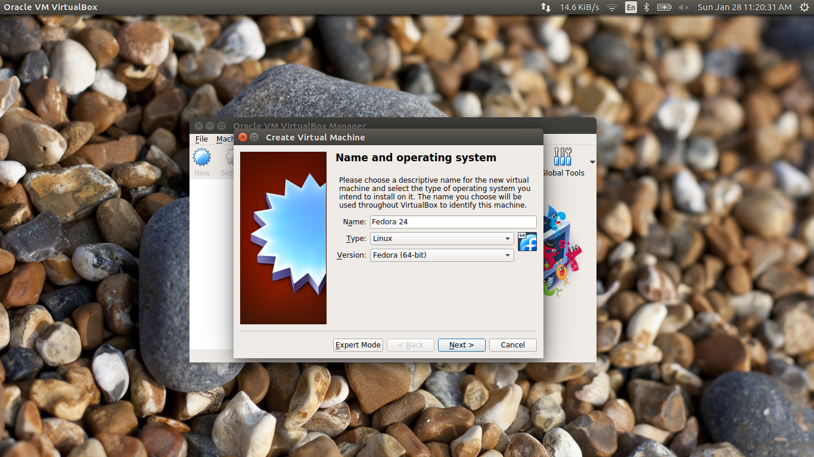
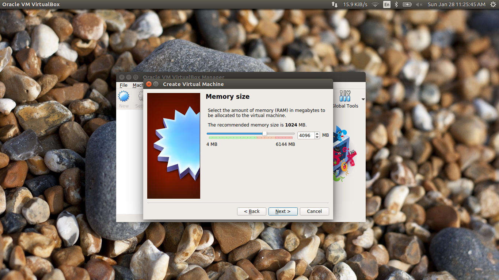
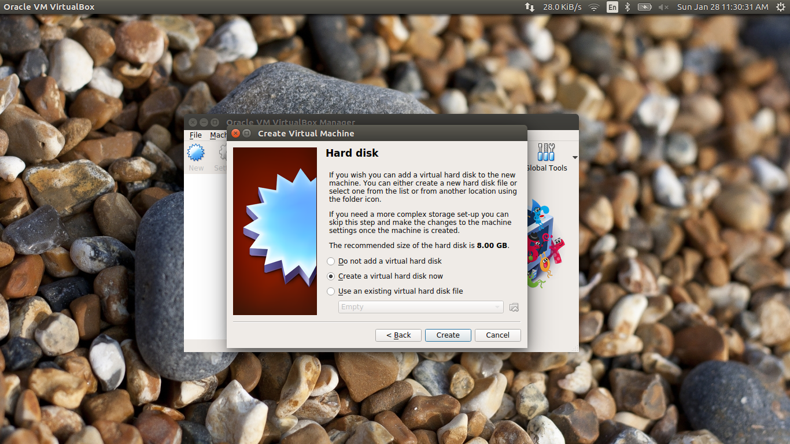
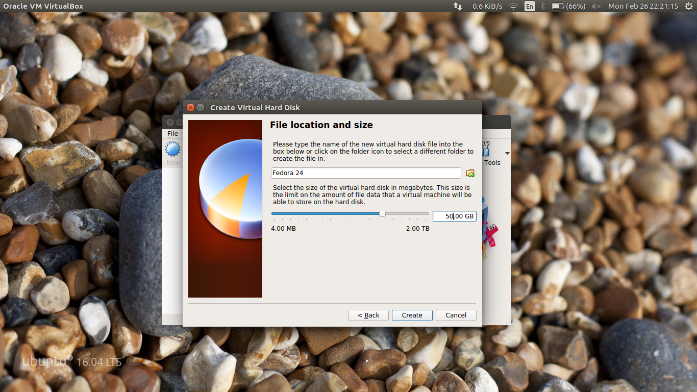
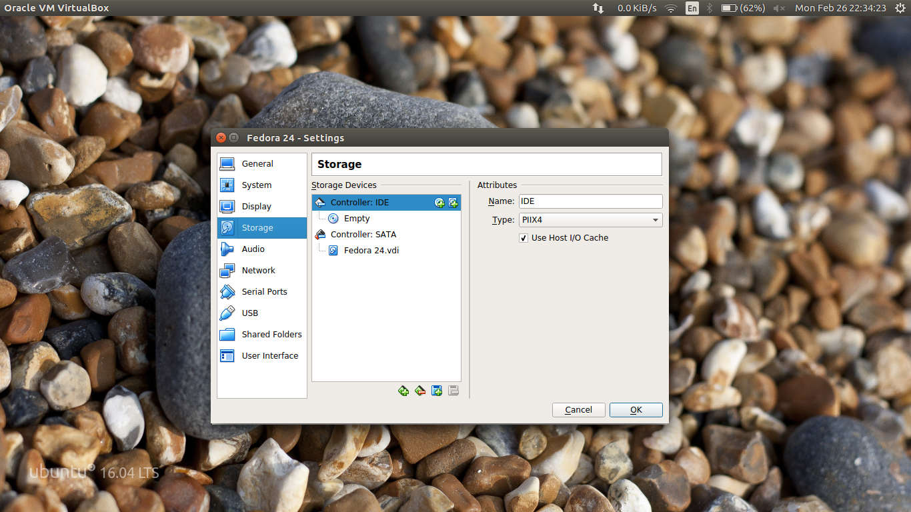
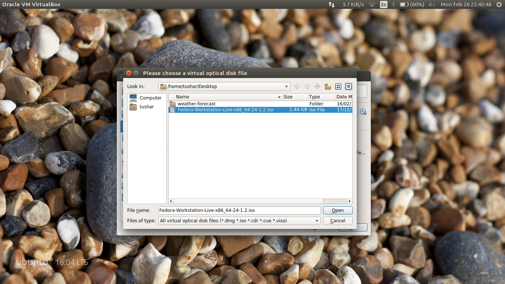
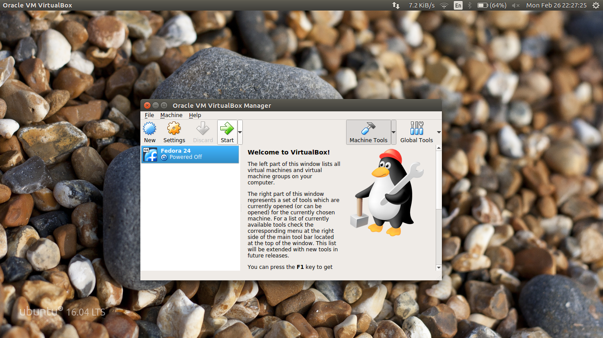

Installing Linux on Virtual Box
Oracle VM VirtualBox is a free and open-source hypervisor for x86 computers currently being developed by Oracle Corporation. Virtual Box allows you to install/run multiple operating systems without modifying or deleting your current operating system. You can download Virtual Box for your respective opearting system from Here.
After downloading the Virtual Box from the official website run .exe (Windows Users), .deb (Ubuntu Users) etc. for installation. Once the installation is completed we are now ready to install the operating system. In this tutorial we are using Ubuntu 16.04 for installation.
Steps
1. Click 'New' button

2. Give the name for your virtual machine. Select the type of operating system and version and then hit Next. Here we are using Fedora 24 (64 bit)

3. Select the amount of RAM you want to assign for your virtual machine and hit Next. Our system has 6GB of RAM so we are assigning 4GB for our virtual machine. Mininum 2GB of RAM is recommended for better performance.

4. Now create a new virtual hard disk.

5. Then click Next and select VDI(Virtual Disk Image) as hard disk file type.
6. Keep storage of the hard disk as dynamically allocated and click Next.
7. Allocate the size for the hard disk and hit Create.

8. Right click on newly created virtual machine and select settings and after that select storage.

9. Select Empty and then click on CD icon and select Virtual Optical disk file. Now browse to the location where you have downloaded iso file for fedora. (If you do not have iso image, you can download the latest version from Here).

10. Now after selecting the image click Ok. Now your virtual machine is ready to use click on Start button.
